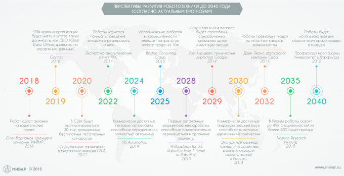

В ближайшем будущем роботы заменят людей на транспорте, в армии и в домашнем хозяйстве, и, как бы ни пугали нас писатели-фантасты различными вариациями на тему «бунта машин», ситуация с развитием робототехники такова, что остановить прогресс в этой области не представляется возможным.
Во-первых, роботы уже стали частью новой промышленной революции, основные черты которой — роботизация производства и широкое внедрение аддитивных технологий (3D-печати). Эти процессы дополняют друг друга, поскольку внедрение 3D-печати существенно снижает объемы сборочных работ и количество видов механообработки.
С каждым годом автоматизируется все больше и больше заводов, и сейчас завод, на котором работает 20-30 человек, а всю остальную работу выполняют роботы уже не редкость. Промышленные роботы в настоящее время выпускаются десятками тысяч ежегодно.
Во-вторых, робототехника становится общим двигателем любой индустрии, поскольку она способствует производству изделий точной механики, электротехники, электроники, оптики, композитных материалов и т. д.
И, в-третьих, развитие робототехники уже сегодня позволяет решать различные социальные проблемы, такие как ограничение миграции низкоквалифицированной рабочей силы, уход за престарелыми людьми, снижение человеческих потерь в военных конфликтах и на транспорте.
Прогресс в робототехнике весьма нагляден, поэтому в ближайшие 20-25 лет можно ожидать следующие события:
|  |
2018 - Робот сдаст экзамен на водительские права / Олег Варламов, президент компании МИВАР, 2016 |
2019 - 90% крупных организаций будут иметь в штате такую должность, как CDO (Chief Data Officer, директор по управлению данными) / Gartner, 2016 |
2020 - В США будут эксплуатироваться 30 тысяч гражданских беспилотных летательных аппаратов / Федеральное управление гражданской авиации США, 2012 |
2022 - Роботы научатся понимать поведение человека и реагировать на него / Экспертно-аналитический отчет РВК, 2014 |
2025 - Использование роботов в промышленности уменьшит затраты на оплату труда на 16% / Boston Consulting Group, 2015 |
2028 - Первые автономные медицинские микророботы, способные самостоятельно перемещаться в организме пациента / A Roadmap for U.S. Robotics: From Internet to Robotics, 2013 |
2029 - Искуственный интеллект будет способен к самообучению, пониманию шуток и имитации эмоций / Рэй Курцвейл, технический директор Google, 2014 |
2030 - Коммерчески доступные андроиды, внешний вид и способности которых идентичны человеческим / Экспертный семинар "Тренды и перспективы развития отрасли робототехники в России", 2014 |
2032 - Роботы превзойдут людей по интеллектуальным возможностям / Дэйв Эванс, футуролог компании Cisco, 2011 |
2035 - В Японии роботы освоят до 49% специальностей из более 600 существующих / Namura Research Institute, 2015 |
2040 - Роботы будут использоваться для обеспечения правопорядка в городах / Профессор Ноэл Шарки, Университет Шеффилда, 2012 |
Прогнозы - дело неблагодарное, у людей редко получается заглядывать в будущее, уж слишком много факторов необходимо учитывать. Но читать прогнозы часто бывает интересно, да и решения нередко принимаются именно на основании прогнозов специалистов.